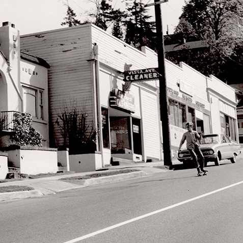

Downtown Tour
Enjoy a walking tour of Portland's days gone by. This walking only tour provides a glimpse into the natural, architectural, and cultural history of downtown Portland. Upon arrival, you will receive a booklet of the 20 locations we will visit throughout this three hour tour. Use this booklet to compare Portland's current landscape with accurate historical context.
What's Included? 
- Complimentary tour booklet with Before and After photos and a brief history of each location
- Complimentary water
Transportation: Walking
Food: None
Price: $50
"It was amazing to walk around downtown Portland comparing the images in the booklet to the current building or in some cases disappearance of a building." - Emily